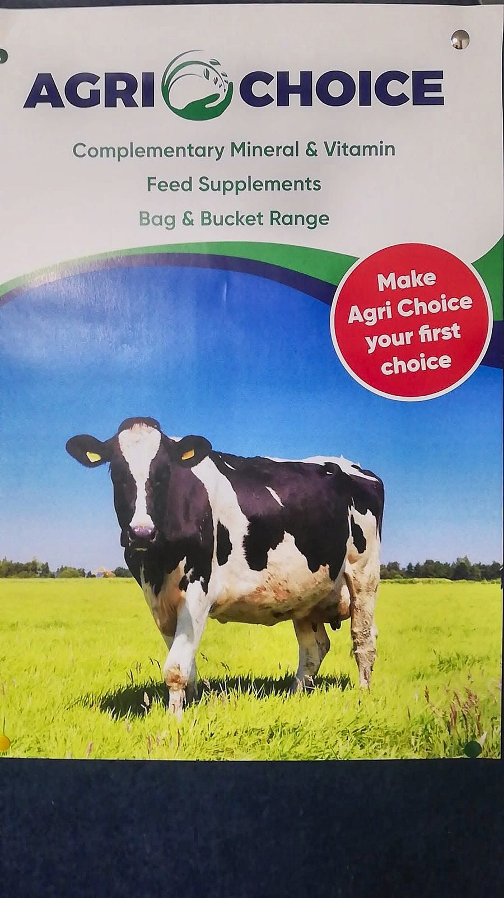

Home / Feed & minerals
Feed & minerals
Feed straights, ground in Camolin
We grind barley, beans and oats in our own mill and sell all our feed as straights. Our house ration recipes show you how to put them together for beef, dairy and sheep, with Agri Choice minerals to go with them.
House ration recipes
Recipes for beef, dairy and sheep
Our house ration recipes, by protein, all made from the straights we sell. Ask us about any of them, or we'll work out a recipe to suit your stock.
Beef
Dairy
Sheep
Native grain means Irish barley, beans and oats. The more native grain in a recipe, the more of it is grown and ground close to home.
All feed ingredients are supplied as straights, not pre-mixed rations. Minerals are sold separately and are not mixed through the straights.
Straights
Buy the straights and mix your own
All our feed ingredients are available as straights.
We'll work it out with you
Tell us what stock you're feeding, their weight and the quality of your silage. We'll recommend a ration, check its protein and energy (UFL/UFV) against what they need, and work out the mineral rate to go with it.
Minerals
Minerals, including Agri Choice
Minerals are sold separately from the ration, so you can feed the right one at the right rate for each group of stock.

| Agri Choice Calf/Beef GP | Calves and beef cattle |
|---|---|
| Agri Choice Dry Cow | Dry cows before calving |
| Agri Choice Maize Beet | Cattle on maize or beet diets |
| Agri Choice Sheep | Ewes |
| Sweet Cal Mag | Grass tetany risk |
| Rumbuff + Yeast | Rumen buffer for cattle on high-meal diets |
| Lamb 25 | Lambs and store hoggets |
Want a ration worked out for your stock? Ring us with your silage figures.
Mon – Fri 9am – 6pm · Sat 9am – 1pm